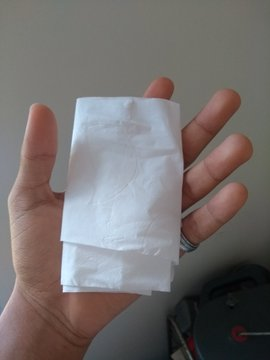

Mas primeiro:
Os lenços umedecidos são mais suaves, macios, espessos e resistentes. Promovem uma limpeza mais eficiente, comparado ao papel higiênico tradicional. Além disso, possuem extratos naturais que ajudam a manter a hidratação e proteção da pele.
Se for usar no papel, acerte!
Papel higienico suave, de folha dupla, pra poder gastar menos voltas na mão. "Atenção, quanto maior quantidade de papel, maior a area de captação, mas não abuse, uma hora não da pra dobra mais." Cuidado tambem, na escolha do papel com perfume, alguns soprosos são alergicos.
- Dê 3 voltas de papel na mão com papel. (Pode ser 4 voltas!)
- Veja que ao tirar a mão vira um rolo de papel higienico bem solto.
- Posicione nas pontas dos dedos e faça a primeira varredura, de dentro pra fora.
- Verifique se há muita sujeira, caso necessario repita o processo, ou, dobre a folha e faça outra varredura.
- verifique novamente esperando que esteja limpo o papel recem passado na fenda e se estiver MUITO SUJO repita o processo.
- Finalize com um lenço umidecido para deixar tudo brilhando.
Como usar:
Não precisa falar que:
Faça movimentos suaves, não limpe seu soproso de fora pra dentro, seu(sua) amiguinho(a) agradece. E o atrito, por papeis mais comuns, pode machucar a pele ocasionando dermatite, fissuras, infecções e as hemorroidas.